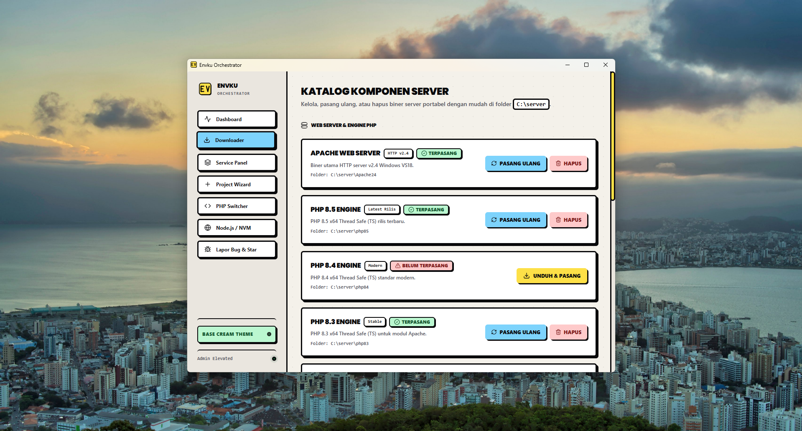
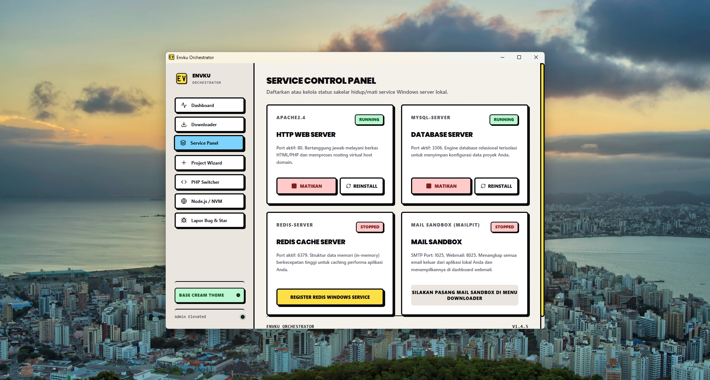
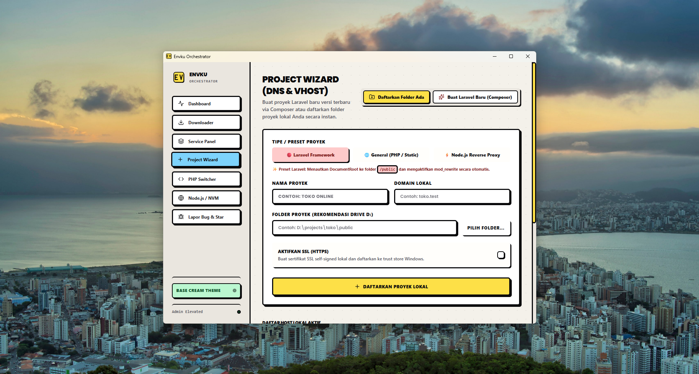
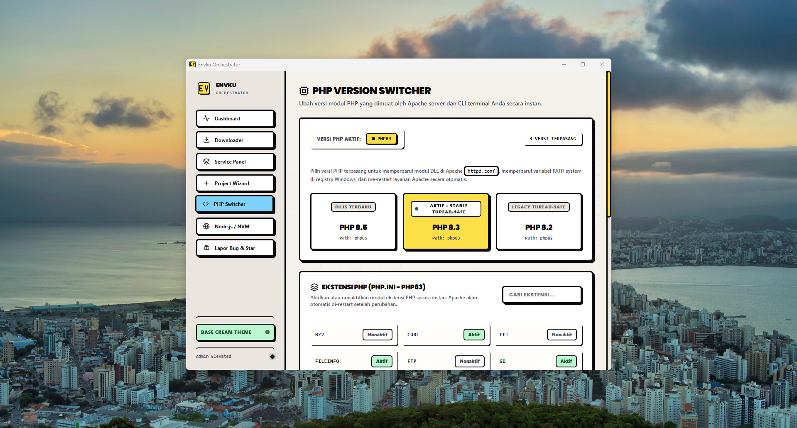
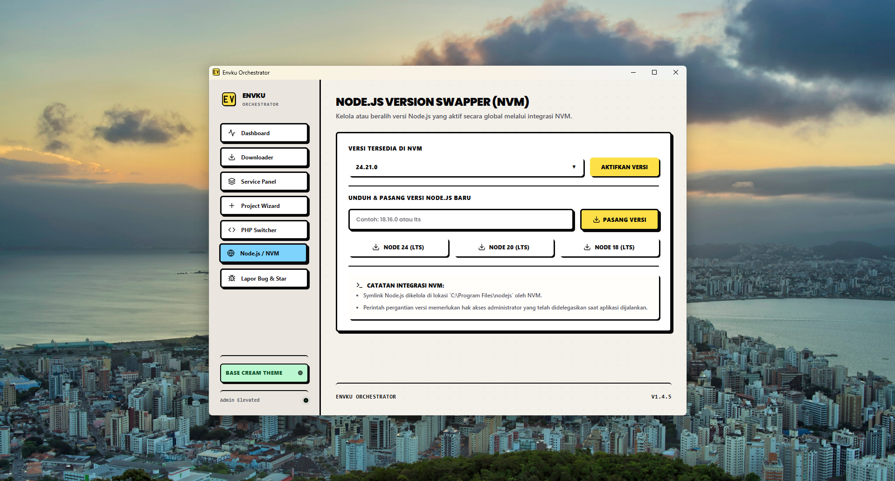
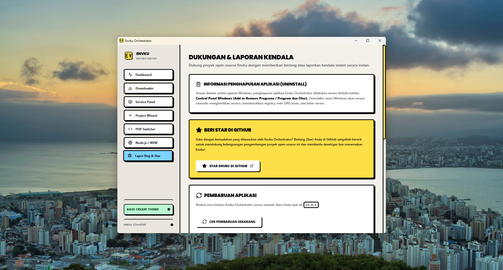

GALERI RESMI ENVKU ORCHESTRATOR
Dirancang dengan antarmuka Neo-Brutalist yang bersih, responsif, dan terorganisir. Berikut tangkapan layar asli setiap menu aplikasi sesuai alur kerja pengembang.
Pemeriksaan Integritas Sistem & Terminal CLI Terintegrasi
Pantau kondisi folder server secara real-time di direktori C:\server, verifikasi ketersediaan modul, dan buka Terminal
Envku dengan sekali klik.

Unduh & Ekstrak Komponen Server Resmi Tanpa Installer
Unduh paket resmi Apache, MySQL, PHP, phpMyAdmin, Redis, Composer, dan Mailpit langsung dari cermin distribusi teruji. Semua komponen diekstrak mandiri tanpa meninggalkan residu di Windows Registry.

Kendalikan Server Apache, MySQL, Redis & Mailpit Dalam 1-Klik
Pantau status server secara real-time langsung dari panel kontrol terpadu. Daftarkan Apache 2.4, MySQL 8.0, Redis, dan Mailpit sebagai background service native yang aman tanpa konflik port.

Domain Lokal .test & Reverse Proxy ke Dev Server Otomatis
Lupakan mengedit file Windows hosts
dan httpd-vhosts.conf secara manual. Envku membuat domain
lokal rapi seperti proyek-anda.test dan menyambungkan
reverse proxy port Node.js/Vite secara otomatis.

Beralih Antara PHP 8.2 Hingga 8.5 & Sakelar Ekstensi Visual
Kembangkan aplikasi Laravel lama, WordPress, atau proyek mutakhir
berbasis PHP 8.5 berdampingan. Envku secara otomatis mengonfigurasi Apache httpd.conf dan Windows PATH CLI tanpa merusak setelan lama.

Kelola Berbagai Versi Node.js Global Tanpa Bentrok
Beralih antar versi Node.js (v18, v20, v22) secara mudah dengan integrasi NVM bawaan. Symlink global otomatis terkonfigurasi untuk eksekusi perintah NPM, NPX, dan Vite langsung dari terminal sistem Anda.

Pusat Bantuan, Pembaruan Otomatis & Kanal GitHub
Akses panduan praktis, periksa versi rilis terbaru dengan modul auto-updater terintegrasi, serta laporkan kendala atau saran fitur baru langsung ke repositori GitHub Envku.

SIAP MENCOBA ENVKU ORCHESTRATOR?
Unduh sekarang dan nikmati alur kerja server lokal tanpa konfigurasi manual yang membingungkan.